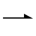
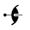

The symbol above shows a twofold screw axis perpendicular to the
plane of the screen, i.e parallel to Z.
A twofold screw axis is equivalent to a rotation of 180°
about a line followed by a translation parallel to that line.
A two-one screw axis with
a twofold rotation about the c-axis, i.e. about
the line 0,0,z, followed by a translation of 1/2 c
along it, will have
the corresponding symmetry operator -x,-y,1/2+z.
This axis has the written symbol "21".

The symbol shown above corresponds to a twofold screw axis, but now
parallel to the Cartesian X direction.
A twofold rotation about the x-axis, followed by a 1/2a
translation along it, will have
the corresponding symmetry operator 1/2+x,-y,-z.
A fractional
value next to the symbol indicates the height of the axis of rotation above the
XY plane.

In space group diagrams for cubic symmetry, twofold screw axes may
appear inclined
at an angle of 45° to the XY plane. The symbol for these is
shown above, the dot indicating the exact position of intersection with
the plane.